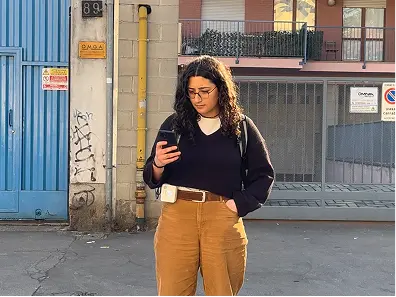
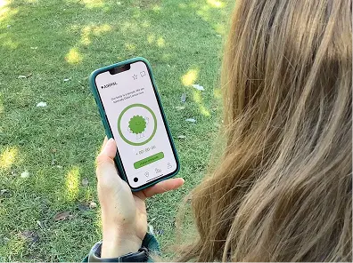
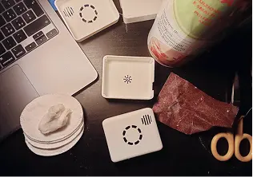
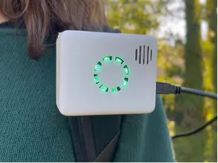

The problem
Air quality is invisible — and that's exactly the problem. Most people know pollution exists, but without being able to see or feel it in real time, it rarely changes behaviour. City life makes it worse: polluted air, tight schedules, little time for self-care.
The idea
AirPal is a physical companion device paired with a mobile app that visualises your "health battery" against real-time air quality. Time spent in polluted areas drains your PAL and makes it look sick; time in cleaner, greener spaces recharges it.
The framing borrows from Tamagotchi-like play: by taking care of your PAL, you also take care of yourself. The goal was to nudge small, healthier habits — without guilt or shame — and make self-care feel like a game.
My role
Tools
- Figma
- ProtoPie
- Arduino & sensors
- Illustrator
The process
We designed AirPal around three modes — City, Nature, and Social — each shaping how the PAL responds to your environment and your community.

City mode
After more than an hour in polluted air, one notch of the LED circle powers off. You can check your PAL's status in the app — if it loses battery, it gets sick.

Nature mode
To recharge, you need to spend time where the air is clean. Every hour in nature recharges one notch — and your PAL gradually feels better.
Social mode
AirPAL connects you with people who share your interests. You can join their network and challenge friends in the rankings.
On the hardware side, the prototype used an Arduino Uno board, an MQ135 air quality sensor, a piezo buzzer, and an LED ring — all positioned inside a 3D-printed case with holes for the sensor and the LEDs.



The outcome
Four principles shaped the final design:
- Feedback: only positive nudges — celebrate achievements instead of shaming.
- A cute character: an interactive PAL to keep the experience light and fun.
- Personalisation: change your PAL's colour and nickname.
- Gamification: a simple ranking to encourage group activity in green areas.
The PAL itself has nine expressions, reflecting how it feels based on the air around it — from glowing and happy to wilting and sad.


Reflection
AirPal was the project where I most clearly felt the connection between design and wellbeing — the two things I care about most. Designing something that could genuinely shift a person's relationship with their environment, without lecturing them, was a challenge I found deeply motivating.
The biggest lesson was about framing. Early versions of the concept leaned toward warning and data — showing people how bad the air was. User feedback quickly told us that felt anxious and discouraging. Shifting to a positive, celebratory model completely changed how people related to the device.
If I were to take this further, I'd explore integrating official AQI APIs for real city data, wearable form factors, and a more developed social layer.